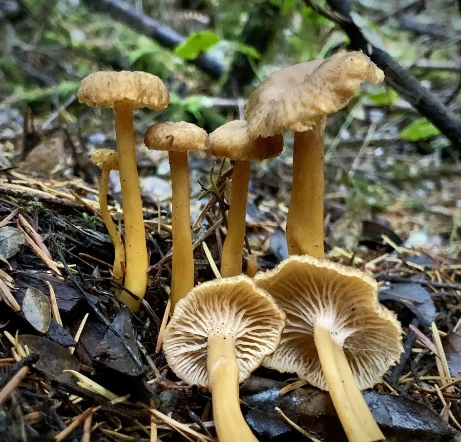

真菌 · 真菌界
管状鸡油菌 Cantharellus tubaeformis

鸡油菌科食用菌，菌盖漏斗状、褐黄至灰褐，菌褶为分叉的棱脉，秋季生于针叶林地上，须煮熟食用。
- 分类
- 门担子菌门纲伞菌纲目鸡油菌目科鸡油菌科属鸡油菌属
- 栖息环境
- 针叶林与混交林地上，与云杉、松等形成外生菌根
- 地理分布
- 北半球温带针叶林广布，中国东北、西南及欧洲、北美有分布
- 保护级别
- 暂无评估；种群随成熟针叶林减少而下降
物种志
管状鸡油菌的子实体高 3–8 厘米，菌盖直径 2–6 厘米，初期凸起，后深凹成漏斗状，中央常有一小孔，表面褐黄、灰褐至暗褐色，边缘不规则波状。菌肉薄，淡黄，气味温和带果香。子实层为延生的棱脉，而非真正的菌褶，棱脉稀疏、分叉、淡黄至灰黄。菌柄中空，长 2–5 厘米，黄色至橙黄，基部渐细。孢子印淡黄至乳白。
管状鸡油菌生于针叶林与针阔混交林地上，与云杉、松等形成外生菌根，秋季 8–11 月发生，常在苔藓层中成群。它是欧洲常见的食用菌，菌肉薄但香气浓郁，适合炒食、做汤或干制，须煮熟后食用。采食时与有毒的“假鸡油菌”（如丝膜菌属某些种）区分：后者有真正的菌褶、孢子印锈褐色，而管状鸡油菌的棱脉分叉、孢子印浅色。
形态与习性
- 菌盖直径 2–6 厘米，漏斗状，中央常有小孔
- 子实层延生棱脉，稀疏分叉，非真正菌褶
- 菌柄长 2–5 厘米，中空，黄色至橙黄
- 孢子印淡黄至乳白，孢子椭圆形
- 生境针叶林苔藓层，秋季 8–11 月成群
- 食用性香气浓郁，须煮熟，可干制保存
趣味知识
- 管状鸡油菌没有真正的菌褶，而是分叉的棱脉，这是鸡油菌科的关键特征。
- 它的菌盖中央常有一个小孔，像漏斗的出水口，雨水会从孔中流走。
- 欧洲人常把它晒干保存，干品香气比鲜品更浓，是冬季汤料。
- 与有毒的假鸡油菌区别：后者有真菌褶、孢子印锈褐色。